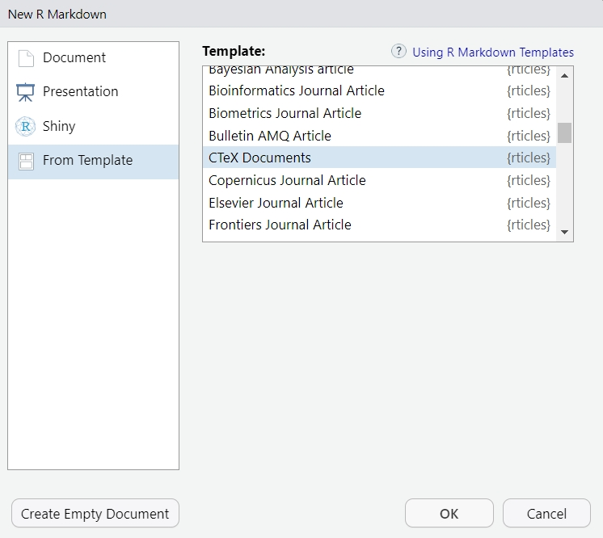

1.6 PDF文档
在输出pdf文档之前，得先确保你已经安装了tinytex包，详见第1.1节。
1.6.1 中文文档
一般而言，大家会在pdf中使用中文和英文。如果你在元数据处将输出格式设定为output: pdf_document，很遗憾，即使你在文档中写有中文也不会正常输出。
对此，你需要下载rticles包。下载完成后，在新建rmarkdown文件时选中From Template，从中找到CTeX Documents模板即可。

图 1.17: 中文文档模板
新建文件中已经将元数据设置好了，之后你只要根据需要适当修改即可。
1.6.3 图与表
在元数据处，可以预先设置一些关于图片的参数。
fig_width/fig_height
用于控制图片的宽度与高度，默认为6.5x4.5。
fig_crop
控制是否启用
pdfcrop，若系统中有，则默认为true。官方文档介绍可通过
tinytex::tlmgr_install("pdfcrop")进行下载，并需配合ghostscript使用。这一块我并不了解，仅仅是将
pdfcrop和ghostscript下载过来罢了，不知道具体的使用方法。fig_caption
在渲染图片时是否生成标题，默认为
true。dev
用于渲染图片的图形设备，默认为
pdf。即使设置了
dev: png，在正文中导入.jpg图片也能正常显示。
output:
rticles::ctex:
fig_width: 7
fig_height: 6
fig_caption: true
dev: pdf
fig_crop: true除了在元数据处设置一些参数，还可以再代码块中进行设置，这在第1.3.9节已经介绍过了。这里重新提及仅针对latex的相关设置。
out.width/out.height
控制图片在输出文档中的宽与高，会进行适当放缩（与物理意义上的
fig.width与fig.height略有不同）。对于latex输出，可以设置为0.8\\linewidth、3in、8cm、40%（等价于0.4\\linewidth）。out.extra
对于latex输出，
out.extra表示的额外参数将会被输入到\includegraphics[]中，例如out.extra='angle=90'表示图片旋转90度。resize.width/resize.height
参数值将会被输入到
\resizebox{}{}中，用于调整TikZ图形的大小。fig.env
设置图片环境，例如
fig.env = 'marginfigure'在latex中表示\begin{marginfigure}。这个选项要求与fig.cap配合使用，即图片得有标题。很遗憾，当
output为ctex时会报错，而当output为pdf_document时则正常，不知原因。fig.scap
短标题，其参数值会被输入到
\caption[]中，通常会在“List of Figures”中展示。在元数据处设置
lof: true就可以召唤出插图清单了。注意lof: true不在output里面，而是与它同一个级别。fig.lp
将被输入到
\label{}中的图片标签前缀。fig.pos
用于
\begin{figure}[]的图片位置参数，可选值为'H'（放置在当前位置，即尽可能靠近代码块）、't'（放置在页面顶部）、'b'（放置在页面底部）、'p'（放置在单独一面）、'!H'（强制放置在当前位置），默认为''。fig.ncol、fig.subcap、fig.sep
而对于表格，和html文档类似，可在元数据处指定表格的打印形式，可选值有default、kable、tibble、和自定义函数。
1.6.4 语法高亮
同第1.5.3节中的语法高亮。